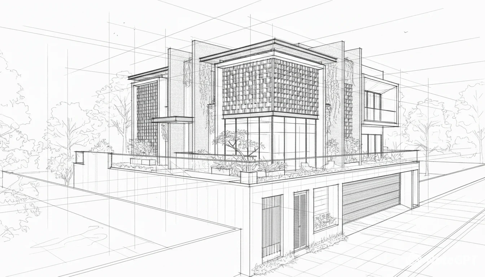
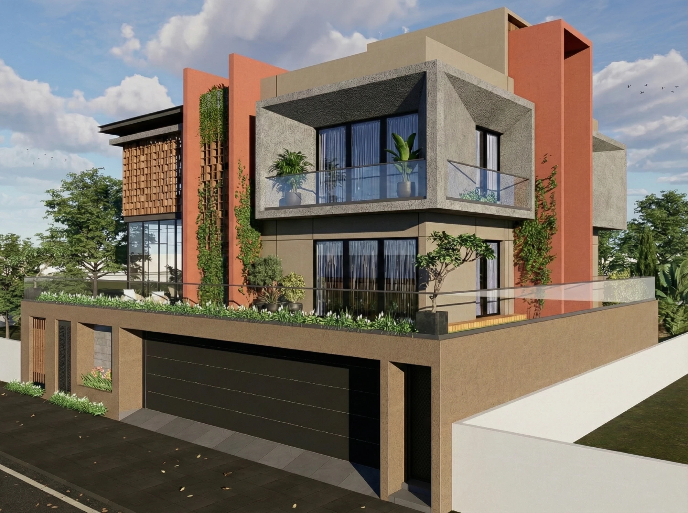
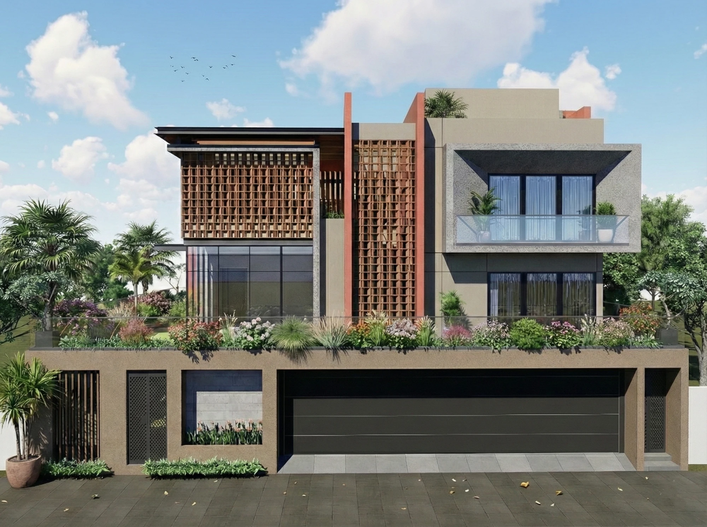
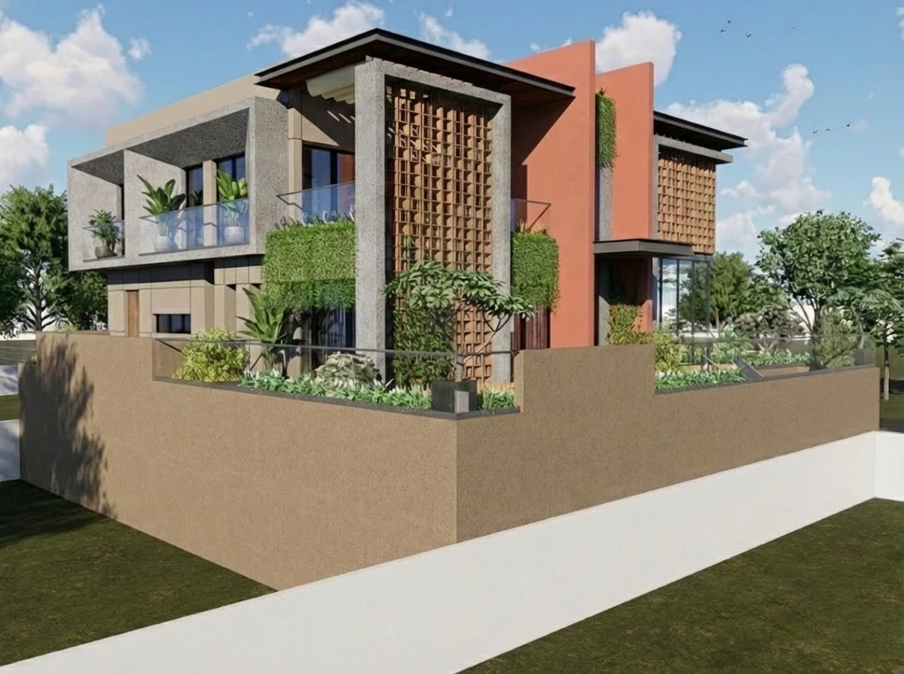
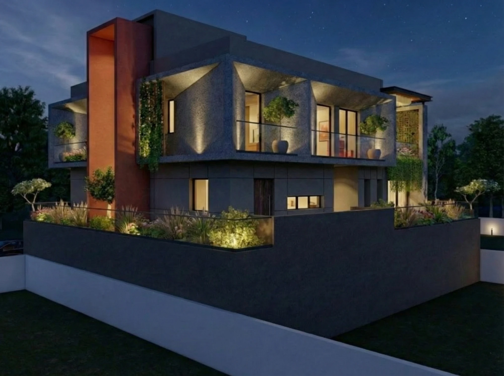

A home behind a woven veil of brick and timber jaali.
The project
On a generous 4,250 sq ft corner plot, the house lifts its living floors over a podium of parking and services and opens onto a wrap-around rooftop garden. A deep brick-and-timber jaali veils the double-height corner, filtering the Surat sun while the rooms glow warmly behind it.
Warm terracotta render plays against board-formed concrete, and vertical gardens climb the piers. Planned to Vastu and built to breathe: cavity walls temper heat and sound, stack ventilation and open planning move air through the section, and a water-conservation tank and solar-ready roof carry the house toward self-sufficiency.
Principal Architect Bhavin Swami · Senior Architect
Concept
A hand study of the corner, the double-height jaali screen, terracotta piers and the raised garden podium drawn before the render.
Visualisation





The approach
Accommodation